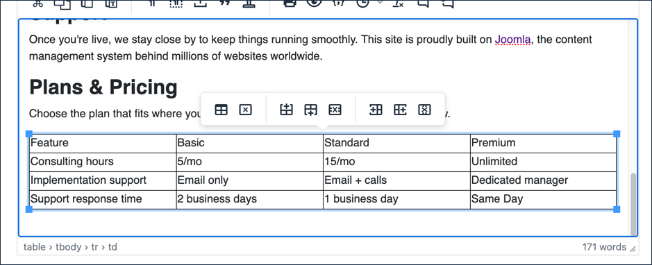
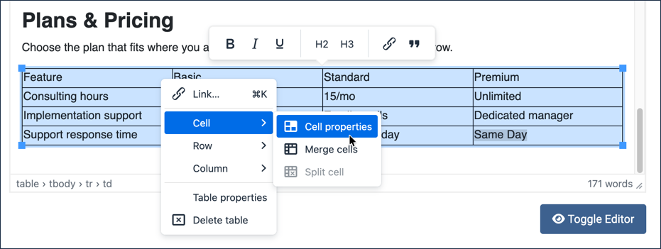
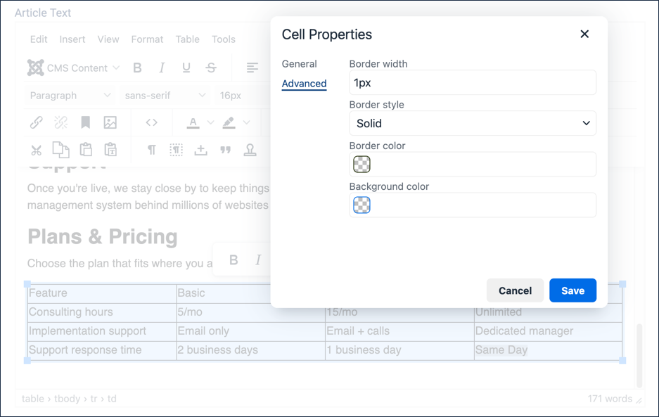
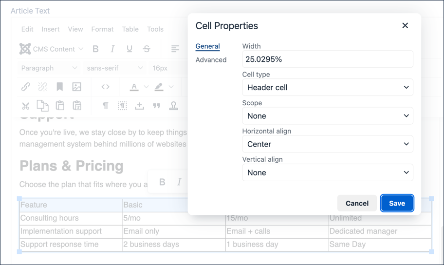
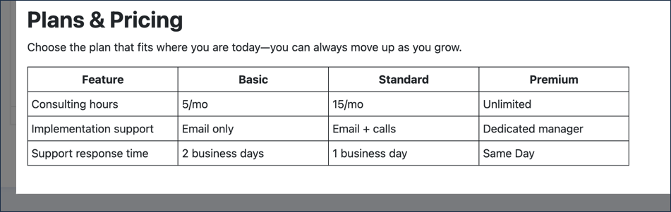

Using the text editing tools in Joomla, learn how to create and format a table in an article. In this final tutorial of the section, we'll complete the Our Services article by adding a plans-and-pricing table.
Row 4:Support response time, 2 business days, 1 business day, Same Day
When the cursor is in any cell, a contextual menu appears above the table.
Here you can add or delete rows or columns.
Hover over the icons to reveal their function.

The filled-in table, unformatted, with the contextual toolbar above it
Adjust the column and table width.
Hover over the border line dividing two columns and note the cursor changes.
Click and drag the border left or right to change the width of a column.
Dragging the far right border adjusts the width of the table.
Save and preview your article by clicking the Save button followed by the Preview button. Result: A popup frame of your article appears.
Scroll down to examine the table.
Note there are no borders between the table cells.
Close the preview window.
Add cell borders.
Click into the top-left cell and drag down and to the right to highlight all the cells in the table.
Right-click any highlighted cell, hover over Cell, then click Cell properties. Result: The Cell Properties window opens.

Reaching Cell properties from the right-click menu
Click Advanced. Set Border width to 1px and Border style to Solid.

Setting a 1px solid border on the Advanced tab
Save and close the form.
Save the article and preview. Result: All the cells are formatted the same. Next we'll format the table heading.
Close the preview window.
Set the table header row.
Highlight the top row of the table by clicking into the top-left cell and dragging to the right while holding down the mouse button.
Right-click any of the highlighted cells, hover over Cell, then click Cell properties.
Under Cell type choose Header cell.
Under Horizontal align choose Center, then save. Result: The header cell contents are centered and formatted with bold text.

Setting the top row's cells to Header cell, centered
Save the article and preview. Result: The cell content is tight against the cell borders.
Close the preview window.
Adjust the cell padding.
Right-click anywhere in the table and select Table properties.
Enter 5px under Cell padding.
Save the article and preview. Result: The table is fully formatted — bordered, with a centered bold header row and comfortable cell padding.

The finished Plans & Pricing table
Click Save & Close. Result:Our Services is now complete — an opening paragraph with bold and italic emphasis, three headed service sections, a bulleted and a nested numbered list, a hyperlink to the Joomla project, and a formatted pricing table. If you'd like to publish it, 2.1 Article & Menu Item covers adding a menu link so visitors can find it.
Concepts
Setting header cells is an important semantic and accessibility issue; see Creating Accessible Tables for more.
Browsers will adjust table and cell widths differently depending on browser width and window size.
Tables are intended for displaying tabular data. At one time it was popular to use tables for layout to position content on a page. They should never be used for this purpose.